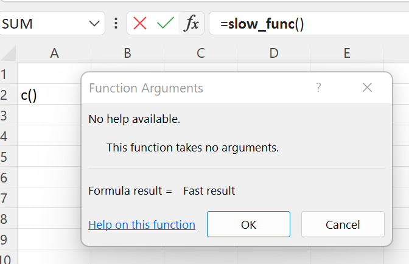
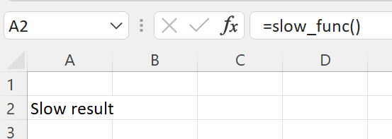

Magic Global Functions¶
xlSlim has four magic global functions that are always available in Python code running within xlSlim: XLSLIM_UDFFUNC(), XLSLIM_INWINDOWFUNC(), XLSLIM_COMAPPFUNC() and XLSLIM_CALLERFUNC().
-
XLSLIM_UDFFUNC()¶
This global function can be used to access VBA functions as well as functions defined in other Excel add-ins.
An example is this function that calls the EUROCONVERT() Excel add-in function. See Calling VBA and other Excel add-in functions for a detailed example.
def eur_conversion(amount: float, from_currency: str, to_currency: str) -> float:
"""Convert to EUR using the Excel addin function EUROCONVERT."""
return XLSLIM_UDFFUNC("EUROCONVERT", amount, from_currency, to_currency)
-
XLSLIM_INWINDOWFUNC()¶
This global function can be used to check if the code is running while the user has the Excel Function Wizard open. In some cases, such as if the code is slow or has side effects, you may wish to not execute the function when the Function Wizard is open.
This Python code shows how it can be used to control which path a function executes:
XLSLIM_INWINDOWFUNC = None
def slow_func():
if XLSLIM_INWINDOWFUNC():
return "Fast result"
return "Slow result"
When in the Excel Function Wizard the Python code returns “Fast result”.
{kind=link}
Else the Python code returns “Slow result”.
{kind=link}
-
XLSLIM_COMAPPFUNC()¶
This global function can be used to access the calling Excel application via COM. This is usually used when automating Excel or replacing VBA code.
An example is this function that sets a cell value. See Replacing VBA with Python and Creating a Pivot Table using Python for detailed examples.
XLSLIM_COMAPPFUNC = None
def PythonRules():
excel_obj = XLSLIM_COMAPPFUNC()
app = excel_obj.Application
app.ActiveWorkbook.ActiveSheet.Cells(2, 3).Value = "Python Rules!"
-
XLSLIM_CALLERFUNC()¶
This global function can be used to find the address of the cell calling Python.
XLSLIM_CALLERFUNC = None
def WhoCalledMe():
caller = XLSLIM_CALLERFUNC()
return f"I was called by ({caller.RowFirst},{caller.ColumnFirst}), ({caller.RowLast},{caller.ColumnLast})"